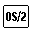

<HTML>
<HEAD>
<META HTTP-EQUIV="CONTENT-TYPE" CONTENT="TEXT/HTML; CHARSET=UTF-8">
<TITLE>BEEP</TITLE>
</HEAD>
<BODY>
<H1>BEEP</H1><!-- entering slot 117 --><!-- Unable to decode bitmap format -->
<P>

<PRE> ──BEEP(frequency,duration)───────
</PRE>

<P>
BEEP sounds the speaker at<I> frequency</I> (Hertz) for<I> duration</I> milliseconds.
The<I> frequency</I> can be any number in the range 37 to 32767 Hertz. The
<I>duration</I> can be any number in the range 1 to 60000 milliseconds.

<P>
This routine is most useful when called as a subroutine. A null string is
returned if the routine is successful.
<P>
Here is an example:
<PRE>/* C scale */
note.1 = 262    /* middle C */
note.2 = 294    /*    D     */
note.3 = 330    /*    E     */
note.4 = 349    /*    F     */
note.5 = 392    /*    G     */
note.6 = 440    /*    A     */
note.7 = 494    /*    B     */
note.8 = 524    /*    C     */

do i=1 to 8
  call beep note.i,250    /* hold each note for */
                          /* one-quarter second */
end
</PRE>
 

<P><HR>

<A HREF="109_L2_ARG.html">[Back: ARG]</A> <BR>
<A HREF="111_L2_BITAND.html">[Next: BITAND]</A> 
</BODY>
</HTML>
